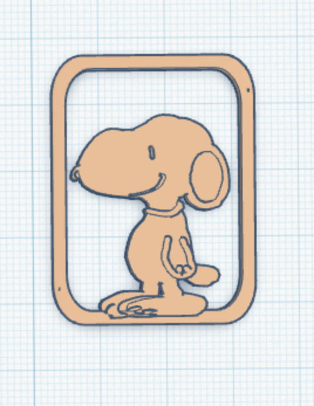
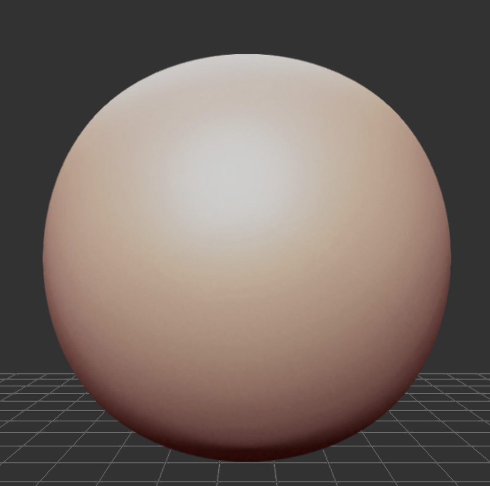

3D-Druck-Werkstatt
Konstruiere eigene 3D-Modelle und drucke sie auf dem Bambu Lab P1S aus!
Münze
EinsteigerAlliterations-Würfel
SprachspielKlammer
TüftlerBleistifthalter
ProfisDigitaler Ton
SculptGL1. Einführung: 3D-Druck & Materialkunde
Wie funktioniert ein 3D-Drucker?
Beim FDM-Druckverfahren (Schmelzschichtung) wird eine Kunststoff-Schnur – das sogenannte Filament – auf etwa 200 °C erhitzt. Der Druckkopf trägt den geschmolzenen Kunststoff Schicht für Schicht von unten nach oben auf eine Bauplatte auf, bis dein Objekt fertig ist.
Wichtig: Wie umweltfreundlich ist unser Plastik (PLA)?
Wir drucken meistens mit PLA (steht für Polylactide, auf Deutsch Polymilchsäure). Es wird zwar aus Pflanzenstärke (z. B. Mais) hergestellt, aber im Chemielabor stark verändert. Deshalb gilt:
- Kein Bio-Müll: PLA baut sich in der Natur oder im Heimkompost nicht ab. Es braucht spezielle Industrie-Anlagen!
- Schlechte Rezyklierbarkeit: Fehldrucke landen meist im Restmüll. Drucke deshalb nicht unnötig viel Plastik aus!
- Hitzeempfindlich: PLA wird bereits ab ca. 60 °C weich. Wenn du dein Modell im Sommer im Auto oder in der Sonne liegen lässt, verformt es sich!
Der Bambu Lab P1S im Überblick
Klicke auf die Nummern im Bild, um die Bauteile kennenzulernen:

1
2
3
4
Klicke oben auf eine Nummer im Bild, um die Erklärung anzuzeigen.
Wissens-Check
Frage wird geladen...
2. Vom Modell zum Druck (Slicing)
Schritt A: Überprüfe dein Modell zuerst selbst!
- Steht das Modell flach auf der Bauplatte (Höhe Z = 0)?
- Sind alle Einzelteile gruppiert (z. B. in Tinkercad)?
- Sind die Wände dick genug (mindestens 2 mm), damit nichts bricht?
- Gibt es freischwebende Teile, die in der Luft hängen würden?
Schritt B: Modell freigeben und exportieren
- Zeige dein Modell der Lehrperson, wenn du die Checkliste oben abgehakt hast.
- Exportiere deine Arbeit als .STL-Datei.
- Im Slicer (Bambu Studio) wird daraus der G-Code für den P1S erzeugt.
3. Digitales Lerntagebuch
Halte deine täglichen Fortschritte fest:
Projekt 1: Einkaufsmünze mit Schlüsselanhänger
- Zylinder einfügen und Masse eingeben: 27 x 27 mm (Höhe: 2 mm).
- Verzierung oder Buchstaben hinzufügen (Höhe: max. 0.5 mm höher als die Münze).
- Zylinder mit Status "Bohrung" für den Schlüsselring einbauen (3 x 3 mm).
- Alle Teile markieren und mit "Gruppieren" verschmelzen.
 Musterlösung Tinkercad
Musterlösung Tinkercad
Projekt 2: Alliterations- & Grammatik-Würfel
Erstelle einen Spezialwürfel für Sprachspiele! Jeder Würfel hat eine feste Grammatik-Rolle und alle 6 Wörter beginnen mit demselben Buchstaben:
- Grundkörper: Würfel erstellen (20 x 20 x 20 mm).
- Spezialisierung wählen: Entscheide, welcher Würfel es sein soll:
• Nomen-Würfel (z. B. Buchstabe A: Affe, Apfel, Auto, Ameise, Ananas, Astronaut)
• Verben-Würfel (z. B. Buchstabe F: fliegen, fangen, finden, füttern, formen, freuen)
• Adjektive-Würfel (z. B. Buchstabe M: mutig, müde, munter, magisch, mürrisch, munter) - Mit dem Werkzeug "Arbeitsebene" eine Würfelseite auswählen.
- Wort platzieren, als "Bohrung" definieren und ca. 0.5 mm vertiefen.
- Für alle 6 Seiten wiederholen und am Ende alles gruppieren.
 Musterlösung Tinkercad
Musterlösung Tinkercad
Projekt 3: Büroklammer
- Grundform wählen und Höhe auf 1.5 bis 2 mm setzen.
- Wandstärken überall bei mindestens 2 mm halten (PLA bricht sonst schnell!).
- Klemm-Schlitz als "Bohrung" ausschneiden.
- Prüfen, dass alle Teile fest miteinander verbunden sind.

Musterlösung TinkercadProjekt 4: Bleistifthalter modellieren
- 1. Klonen: Klicke auf das sechseckige Prisma auf deiner Arbeitsfläche und drücke
Ctrl + C, danachCtrl + V, um es zu kopieren und einzufügen. - 2. Verschieben: Mit den Pfeiltasten deiner Tastatur kannst du das angewählte Objekt gut verschieben. Probier es aus!
- 3. Grösse anpassen: Verändere nun die Grösse des einen sechseckigen Prismas in der Länge und Breite auf 5 mm und die Höhe auf 75 mm.
- 4. Anheben: Ziehe mit dem Kegelsymbol das kurze Prisma auf die Höhe von 85 mm und das lange auf 10 mm (beide Objekte schweben nun über der Arbeitsfläche).
- 5. Zentrieren: Wähle beide Prismen an, klicke oben im Menü auf «Ausrichten» und zentriere beide Prismen genau mittig.
- 6. Gruppieren: Wenn sie schön mittig ausgerichtet sind, wähle beides an und klicke auf «Gruppieren», damit sie zu einem Objekt werden.
- 7. Zylinder erstellen: Wähle aus den einfachen Formen den Zylinder. Gib für Breite und Länge 11 mm ein und für die Höhe 100 mm.
- 8. Alles ausrichten: Wähle den Zylinder wie auch das Prisma an und zentriere sie mit der Funktion «Ausrichten».
- 9. Kontrolle: Wenn du korrekt zentriert hast, ist das Prisma genau mittig im Zylinder platziert.
- 10. Bohrung festlegen: Klick nun auf das Prisma und wähl die Funktion «Bohrung».
- 11. Form eingebohrt: Damit hast du in deinen Zylinder die Prismaform eingebohrt.
- 12. Finalisieren: Markiere mit dem Cursor das ganze Objekt und klicke wieder oben auf das Symbol «Gruppieren».
- 13. Geschafft: Dein Bleistifthalter ist erfolgreich modelliert! Optional kannst du die Aussenseite noch verzieren.
 Musterlösung Tinkercad
Musterlösung Tinkercad
Projekt 5: Figuren aus digitalem Ton formen (SculptGL)
Hier geht es vor allem ums digitale Experimentieren! Öffne die Web-App stephaneginier.com/sculptgl und verforme deine virtuelle Tonkugel.
- Wechsel im Menü rechts unter Werkzeuge von "Pinsel" auf andere Tools (z. B. Ziehen, Glätten oder Lehm).
- Experimentiere mit dem Radius und der Intensität deiner Werkzeuge.
- Forme Gesichter, Kreaturen oder Fantasie-Objekte durch Ziehen, Drücken und Glätten.
- Tauscht euch in der Klasse aus: Welche Werkzeuge und Einstellungen funktionieren am besten?
- Optionaler Druck: Nur wenn du mit deinem digitalen Kunstwerk äusserst zufrieden bist, zeigst du es der Lehrperson für den 3D-Druck!

Digitaler Ton in SculptGL